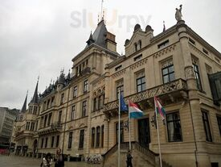

La Maison
Une adresse qui a traversé les générations.
Installé dans une maison centenaire face au Palais Grand-Ducal, le Bistrot de la Presse est le rendez-vous où le vrai Luxembourg se retrouve autour d'une cuisine sincère et généreuse. Boiseries de chêne, murs jaunes, cheminée ancienne et portraits de la famille grand-ducale composent un décor chaleureux pour les grands classiques luxembourgeois — Bouneschlupp, Kniddelen mat Speck, Judd mat Gaardebounen — qui réchauffent habitués et parlementaires depuis des générations. Ici, point de prétention : juste des portions copieuses, des prix justes et l'accueil inimitable qui vaut à la maison son surnom affectueux Beim Heidi.
Face au Palais Grand-Ducal
En plein cœur de la Ville-Haute, voisins du Parlement et du Palais depuis des décennies.
Cuisine luxembourgeoise authentique
Bouneschlupp, Kniddelen mat Speck, Judd mat Gaardebounen — les classiques, préparés avec soin et générosité.
L'accueil Beim Heidi
Heidi accueille ses hôtes comme des habitués — avec chaleur, sans chichi et sans prétention.
